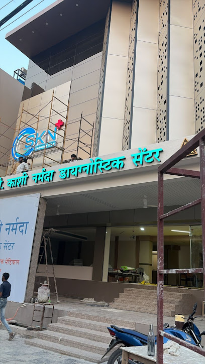
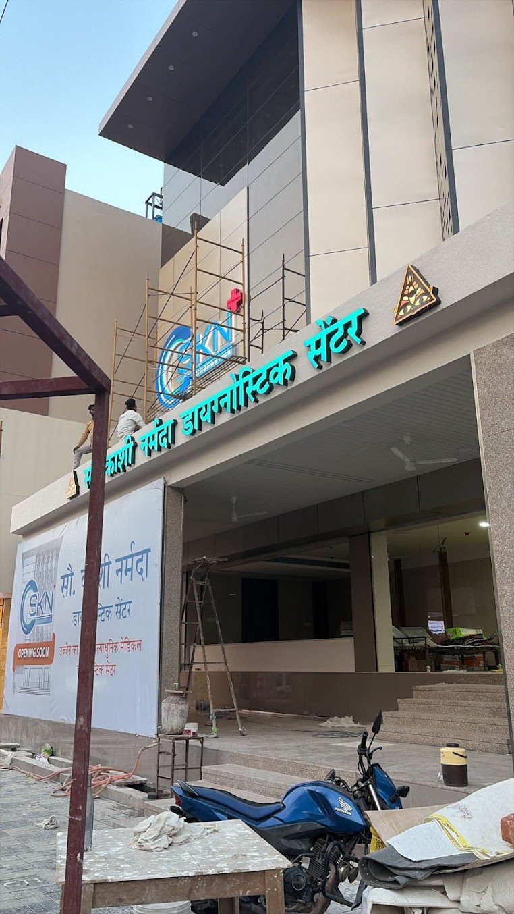
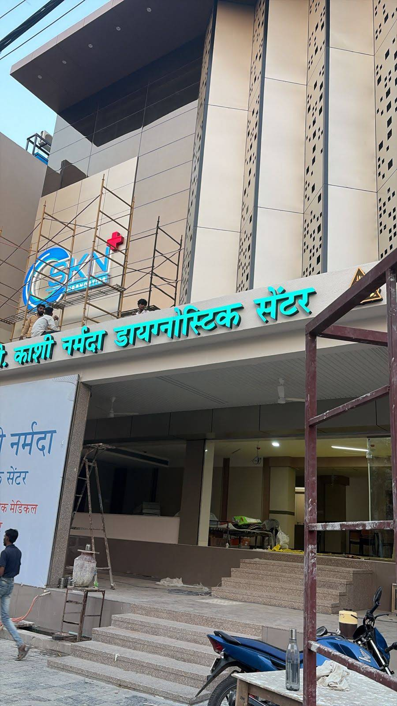
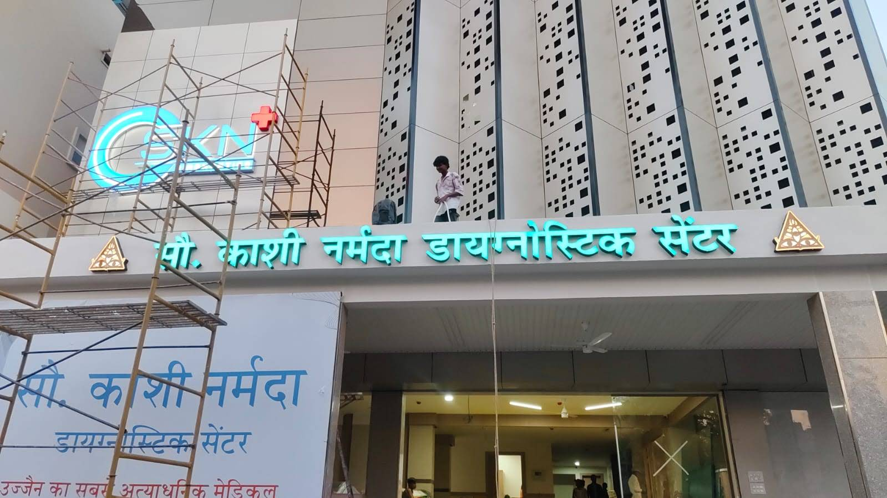

3T Silent MRI
State-of-the-art 3T Silent MRI for neurological, spine, musculoskeletal, and whole-body imaging — whisper-quiet scans with exceptional clarity.
Ujjain · Advanced Diagnostics
3T Silent MRI · Cardiac CT · Fetal Sonography · Digital X-Ray · Pathology
34, Kshapnak Marg, Freeganj — Open Mon–Sat 8am–8pm

State-of-the-art 3T Silent MRI for neurological, spine, musculoskeletal, and whole-body imaging — whisper-quiet scans with exceptional clarity.
Advanced cardiac CT angiography for coronary assessment, calcium scoring, and structural heart evaluation — fast and non-invasive.
Comprehensive obstetric ultrasound including NT scan, anomaly scan, growth monitoring, and Doppler studies for maternal-fetal health.
Low-dose digital radiography for bone, chest, spine, and joint studies — instant digital results with minimal radiation exposure.
Full blood panels, thyroid profiles, lipid studies, liver & kidney function, cultures, and preventive health checkup packages.
Walk-in welcome. Advance booking gets priority slots. Call or visit us.
Schedule Now →


SKN Diagnostics is Ujjain's trusted name for cutting-edge diagnostic imaging and laboratory services. Trusted by doctors and preferred by patients across Central India.

★★★★★"Best diagnostic centre in Ujjain. The 3T MRI experience was completely silent and comfortable. Reports were delivered the same day."
★★★★★"Very professional staff and clean facility. Got my wife's fetal sonography done here — the doctor explained everything in detail. Highly recommend."
★★★★★"SKN Diagnostics has been our family's go-to diagnostic center for years. The radiologists are highly experienced and the equipment is truly state-of-the-art. Their cardiac CT scanning is among the best in Central India. What sets them apart is the genuine care they show every patient — from the reception staff to the technicians, everyone is courteous and helpful. Same-day digital reports are a huge plus."
★★★★★"Affordable rates and accurate reports. I got my full body checkup done here — everything was organized and hassle-free. The pathologist explained each report carefully."
34, Kshapnak Marg, Ghasmandi Chowraha,
Freeganj, Ujjain, MP 456010
Mon–Sat: 8:00 AM – 8:00 PM
Sunday: 9:00 AM – 2:00 PM